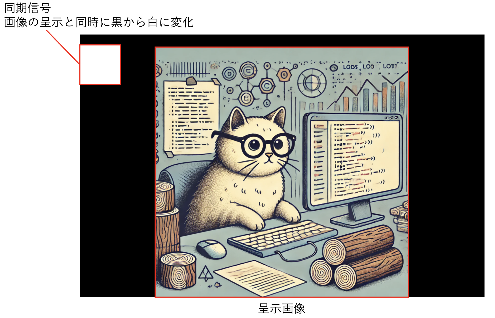
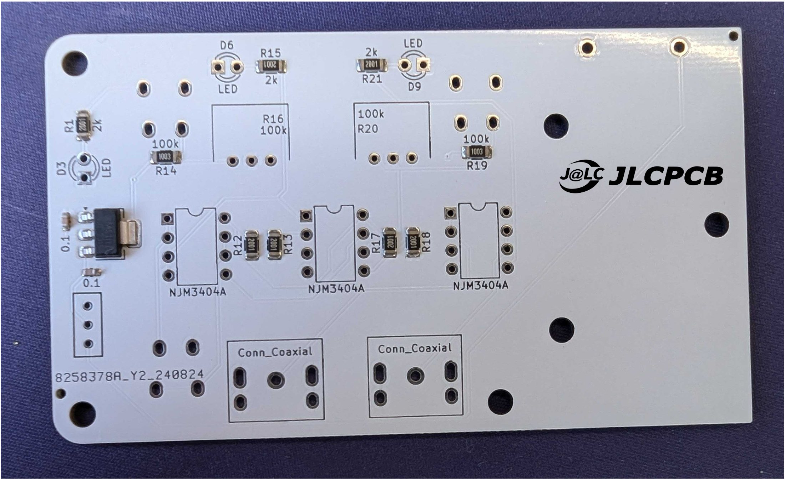

脳波計測デバイスと刺激提示を同期させるためのトリガーボックスの作成
トリガーボックスは，脳波実験において刺激呈示と脳波計測を正確に同期させるための重要な装置です．
トリガーボックスの役割：
- 刺激呈示システム（例：コンピューター画面）と脳波計測装置の間を橋渡しする．
- 刺激が呈示された瞬間を正確に記録し，その情報を脳波データに統合する．
- ミリ秒単位の精度で同期を実現し，ERPの正確な時間分析を可能にする．
トリガーボックスの仕組み：
- 刺激呈示： 刺激呈示システムが特定の刺激を表示する際，図１のように画面左上に同期信号が表示される． 
- 同期信号の読み取りと出力： 画面上の同期信号をフォトダイオードで読み取り，白，黒を識別する．白だった場合，5Vを出力，黒だった場合，0Vを出力する．
JLCPCB

JLCPCBは世界中で170以上もの国や地域との取引実績を持ち，年間の基板製造数は600万枚を超えます．ロボットに必要不可欠な回路基板の製造以外にも金属粉末焼結による部品製作や３Dプリントまで様々なサービスを短納期かつ低価格で提供しています． 学生プロジェクトBioSigMatchは2024年8月からプロジェクトに使用する実験機器の基板を無償で製造していただきました．
